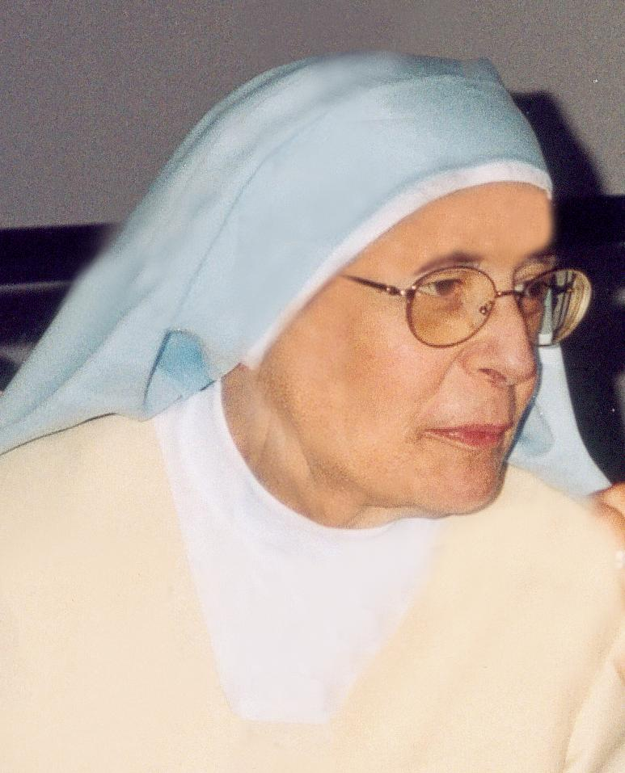

La Madre María Luisa de Jesús y del Corazón Inmaculado (Huelva, 1929 - Cáceres, 2002) fue una contemplativa cuya vida estuvo marcada por la cruz, el dolor purificador y un abandono heroico en la Divina Providencia.
Tras ingresar en clausura en 1945 y salir de ella por motivos de salud y sufrimientos espirituales en 1956, la Madre sintió la inspiración divina de instituir una nueva congregación dedicada a la fidelidad incondicional al Espíritu Santo.
Tras cuarenta años de esperas solitarias, incomprensión y oración callada, en la década de los noventa vio brotar las primeras vocaciones estables, consolidándose la congregación en 1999 con la toma de hábito definitiva.
Entregó su alma al Creador víctima de una leucemia aguda que sobrellevó con heroica alegría y entereza, dejando tras de sí un fecundo legado mariano y eucarístico en el corazón de sus hijas.
La Madre legó tratados de profunda ascética y mística como Darse, Vaso roto, Consumarse en el amor y Ella.
«Cuando nos acercamos al Sagrario parece como si dos brazos inmensos nos cogieran dentro. Como si dos alas maternas nos cubrieran de los pies a la cabeza. Como si dos fortísimas murallas nos defendieran de todas las flechas.»
«Navega en el Mar de Dios a ojos cerrados. Húndete en Él. En ese Eterno Presente que está en tu alma. Serás muy feliz si aprendes a vivir en esta navegación divina y sabes permanecer sereno aun cuando arrecie la tempestad.»
«La Virgen. Ella es la Guardiana de los Secretos de la Trinidad. La Abandonada a las iniciativas divinas. La Silenciosa Morenita que sabía esperar las intervenciones de Dios.»
Oración privada recomendada para pedir la intercesión de la Fundadora.
«Santísima Trinidad: Padre Omnipotente, Jesús, Verbo Encarnado, Espíritu Santo, Eterna Luz, que por tu gran misericordia has querido dejarnos por medio de la Madre María Luisa de Jesús y del Corazón Inmaculado un modelo de fe inquebrantable y de abandono total, y un mensaje de amor, de llama y de una fidelidad absoluta; haz que el ejemplo de sus virtudes nos impulse a una vida de mayor entrega a Ti.»
«Dígnate, si es tu voluntad, hacer brillar en la Iglesia su vida heroica, y concédenos por su intercesión esta gracia que ardientemente te suplicamos. Amén.»
(Padrenuestro, Ave María y Gloria)

Esta novena cuenta con la debida aprobación eclesiástica para el culto privado y la devoción particular de los fieles.
Si has recibido alguna gracia física, espiritual o favor por la intercesión de la Madre María Luisa de Jesús y del Corazón Inmaculado, te rogamos encarecidamente que lo comuniques a la comunidad para el registro y archivo de su causa de beatificación.
Puedes mandar tu testimonio por correo postal a nuestras sedes o por e-mail a:
obradeamorchis@gmail.com